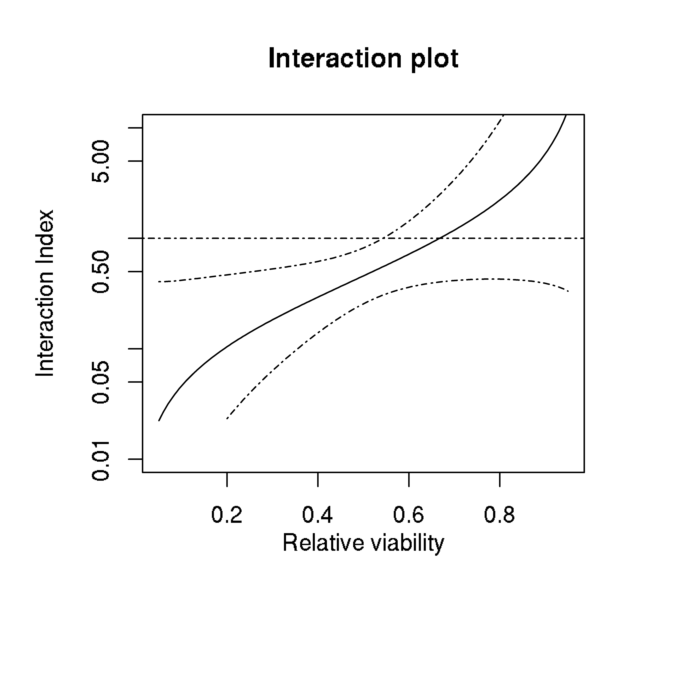
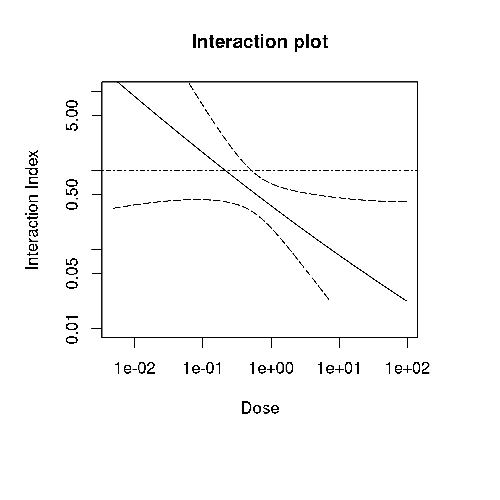
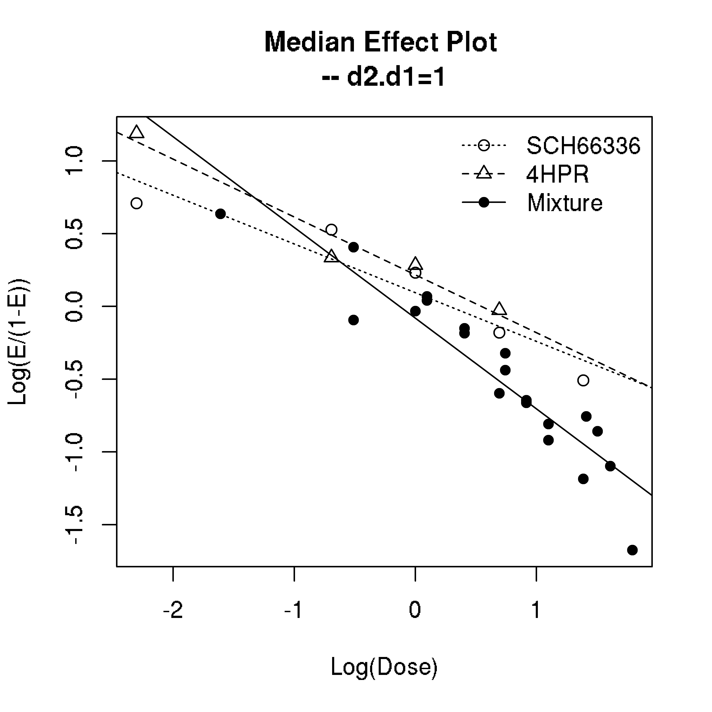
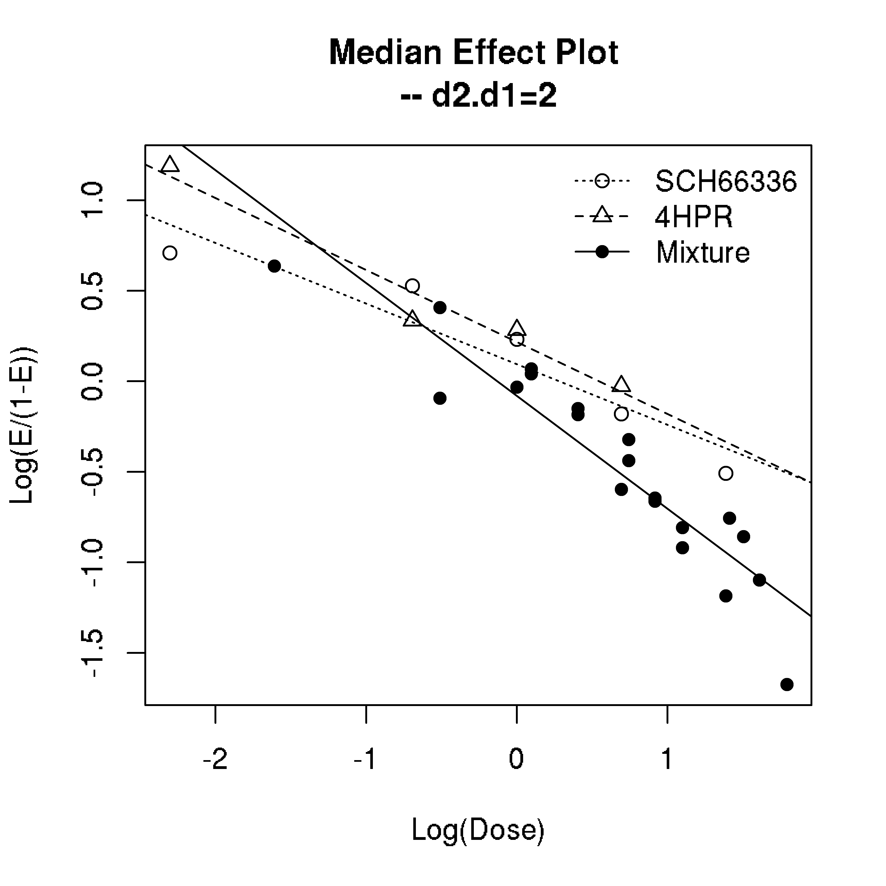
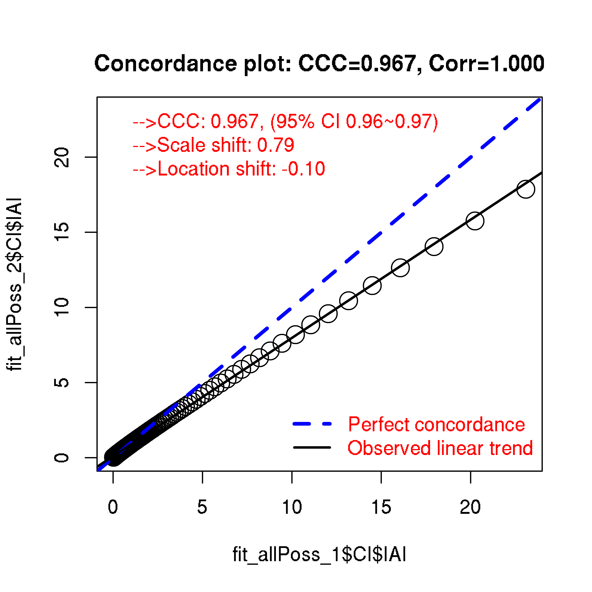

Administering two drugs simultaneously might induce stronger effect than if administered separately. This is called synergism. Experiments to detect synergism (or antagonism which is the opposite) are usually in two forms.
One is the fixed ratio design (ray design) where the ratio of doses between two drugs is a constant. Another one is grid design which means all-possible combinations of drug doses are available.
Two papers have been published regarding to drug interaction index (IAI) by Lee et al, one in 2007 Lee, J. J., Kong, M., Ayers, G. D., & Lotan, R. (2007) and one in 2009 Lee, J. J., & Kong, M. (2009). IAI=1 is the case for additive effect. IAI>1 means antagonistic interaction while IAI<1 means synergistic interaction. The Lee2007 paper described five methods to assess interaction: (1) Lowewe additivity model using interaction index (IAI) (2) Model of Greco et al 1990. This approach uses \(\alpha\) as the metric and it can be related to IAI (3) Model of Machado and Robinson which uses a metric denoted as \(\eta\) (4) Model of Plummer and Short which can also be linked to IAI through the parameter \(\beta_4\) (5) Model of Carter et al that can be linked to IAI through the parameter \(\beta_{12}\). For more details of these models, please refer to Lee, J. J., Kong, M., Ayers, G. D., & Lotan, R. (2007).
The two papers by Lee et al discussed the fixed ratio design and the source code for doing this is incorporated into drexplorer2. To work on grid design, a fixed ratio from the data needs to be selected in order to apply their method. For example, the Lee2007 paper provided an example of grid design. A fixed ratio of 1 was specified in the paper. The specification of fixed ratio would affect the fitted median effect model (see definition in Lee, J. J., Kong, M., Ayers, G. D., & Lotan, R. (2007)) for the drug mixture as well as estimation of IAI. As a result, IAI has a ratio dependent interpretation.
Below we load the UMSCC22B data from Lee, J. J., & Kong, M. (2009). This data has a fixed ratio design. The fitIAI function estimates IAI as well as its confidence interval after specifying dose1, dose2 and effect (between 0 and 1).
library(drexplorer2)
data(UMSCC22B)
fit_fixedRay <- fitIAI(d1 = UMSCC22B[, 1], d2 = UMSCC22B[, 2], e = UMSCC22B[, 3],
name1 = 'SCH66336', name2 = '4HPR')The plotIAI function is then used to generate different plots including IAI versus response, IAI versus dose (predicted dose for the drug mixture, see equation (6) in Lee, J. J., Kong, M., Ayers, G. D., & Lotan, R. (2007)), median effect plot and dose response curves. We can also plot IAI versus response as well as IAI versus dose in one figure by specifying mode=‘both’.
The median effect equation Chou, T. C., & Talalay, P. (1984) is as following: \[E=\frac{(d/D_{m})^m}{1+(d/D_{m})^m}\]
Sometimes replicated viability assays are performed. In such case, it is useful to examine if the experiments are reproducible.
A good metric is the Concordance Correlation Coefficient (CCC) that captures both the location shift as well as scale shift between the replicates. The plotCCC function can be used to compute CCC and visualize the replicated data.
where E is the induced effect of a drug with dose d whose median effective dose is \(D_{m}\) and \(m\) is a slope parameter.
This equation can be arranged as: \[logit(E)=m(log d - log D_{m})\]
The median effect plot shows logit(E) versus log10 dose; The dose response curve shows E versus dose. Below we plot IAI against response. The 95% confidence interval of IAI is shown in dashed line. It can be seen that there is significant synergistic interaction at small relative viability value (<0.5). Although the IAI suggests antagonistic interaction at high viability values, the confidence band shows this is not statistically significant.
## IAI versus response
plotIAI(fit_fixedRay, type = 'IAI', mode = 'response') 
Similarly, we can plot IAI against dose (the sum of dosages from two drugs). The following figure shows that there is significant synergism at high dosage.
## IAI versus dose
plotIAI(fit_fixedRay, type = 'IAI', mode = 'dose') 
The median effect plot is shown below.
## median effect
plotIAI(fit_fixedRay, type = 'medianEffect') 
In Lee, J. J., Kong, M., Ayers, G. D., & Lotan, R. (2007), there is an example data (nl22B2) using grid design. Here we examine the estimate of IAI at different fixed ratios.
data(nl22B2)
fit_allPoss_1 <- fitIAI(d1 = nl22B2$schd, d2 = nl22B2$hpr, e = nl22B2$y1,
name1 = 'SCH66336', name2 = '4HPR', d2.d1.force = 1)
fit_allPoss_2 <- fitIAI(d1 = nl22B2$schd, d2 = nl22B2$hpr, e = nl22B2$y1,
name1 = 'SCH66336', name2 = '4HPR', d2.d1.force = 2)From the median effect plot, we can find that there are 4 data points for drug mixtures at fixed ratio of 1 while only 2 data points are available at fixed ratio of 2.
plotIAI(fit_allPoss_1, type = 'medianEffect') 
plotIAI(fit_allPoss_2, type = 'medianEffect') 
Below we compare IAI estimated from the two scenarios.
plotCCC(fit_allPoss_1$CI$IAI, fit_allPoss_2$CI$IAI)
#> ccc s_shift l_shift ccc_lo ccc_hi Cb corr mean_x mean_y
#> 0.9670 0.7872 -0.0996 0.9632 0.9704 0.9674 0.9996 2.0011 1.6774
#> sd_x sd_y
#> 3.6746 2.8928Drug Interaction Index With Model Selection
The original Chou-Talalay interaction index approach uses median-effect equation to model drug combination data. This method assumes idealized log-linearity which usually does not hold on real data. Here built upon the drexplorer package which automatically selects the best model without constraining to log-linear model, we try to overcome this limitation by extending the interaction index approach to non-linear functions. Using the UMSCC22B data as an example below. We first fit the model and then plot the IAI estimates.
fitL_mod <- fitIAI_mod(d1 = UMSCC22B[, 1], d2 = UMSCC22B[, 2], e = UMSCC22B[, 3],
name1 = 'SCH66336', name2 = '4HPR', ratio = 1)
plotIAI_mod(fitL_mod, mixtureDose = c('A+B'))
Compared to the original Chou-Talalay method, we now observed the dose-response curves fit better to the data and thus IAI estimates from this approach are more reliable. Since some response values are not achieved in the data, it is hard to extrapolate what dose would achieve those responses. This makes the estimation of IAI unavailable in some regions. Thus, this new approach is more conservative compared to the original Chou-Talalay method.